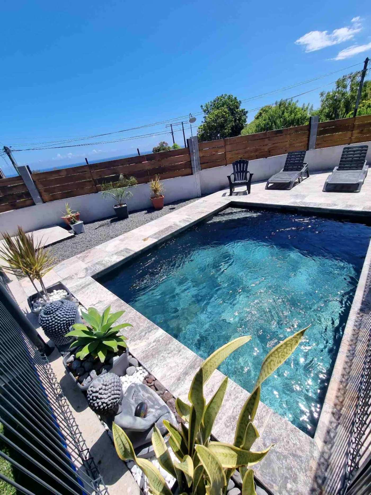

Villa · Saint-Joseph, Vincendo
Au centre du bourg de Vincendo, une villa récente et moderne avec piscine privée, pour vos vacances, un week-end ou une semaine en famille.

L'essentiel
Ouverte toute l’année, de 8 h à 19 h, avec terrasse couverte et espace barbecue dans un jardin clôturé.
Trois chambres climatisées, chacune avec sa salle d’eau et son WC privatifs.
Une villa de création récente, moderne et équipée, pour accueillir jusqu’à 7 voyageurs.
Nicole est Superhôte et répond dans l’heure ; les voyageurs saluent leurs petites attentions, fruits locaux et rhum maison.
La villa en images
Équipements
7 voyageurs · 3 chambres · 4 lits · 3 salles de bain
Un canapé lit dans le séjour, un lit d’appoint possible et un lit parapluie pour les tout-petits.
Ils en parlent
92 % des évaluations à 5 étoiles. Nicole est Superhôte.
« Nous avons passé une super semaine chez not écrin. La maison était superbe, les salles de bain dans chaque chambre c’est un vrai plus, la piscine chauffée était incroyable et la villa est très bien située, tout est à proximité. … Merci à Nicole et Patrick pour le petit panier d’arrivée et pour leur gentillesse et leur disponibilité. »
« Merci à nos hôtes qui ont été très accueillants et nous ont donnés des activités à faire dans les alentours ! Le logement est très fonctionnel, propre et agréable, nous y avons passé un agréable séjour 😊 »
« La meilleure expérience humaine que j’aie vécue depuis mon inscription sur Airbnb. Des hôtes d’une gentillesse exceptionnelle, toujours disponibles, attentionnés et sincèrement soucieux de notre bien-être. … Le logement était impeccable, parfaitement conforme à l’annonce, confortable et très bien équipé. … »
« Un super Week end en famille. Le maître mot : TRANQUILLITE :) Un quartier calme de jour comme de nuit. Maison très bien agencée et bien équipée. 3 suites parentales ( SDB + WC ) c'est vraiment un atout ! La piscine est toujours à bonne température. Pizzeria et excellente boulangerie à 5 min à pied. … »
« Un Grand Merci, à Nicole et Patrick pour ces moments formidable ! La maison était impeccable et vos attentions nous ont permis de nous sentir comme chez nous. Notre séjour chez vous a été parfait du début à la fin. … »
« Très belle adresse sur Saint-Joseph. Nous avons été reçu chaleureusement (merci pour le petit rhum au frais :) ) et nous nous sommes sentis à la maison. … Le quartier est calme et tranquille. La piscine par ce temps a été la cerise sur le gâteau. Idéal pour un séjour en famille. »
Extraits d'avis publiés sur l'annonce Airbnb de la villa. Lire les 89 avis
Le quartier
Infos pratiques
Entre 15 h et 19 h
Avant 11 h
Jusqu’à 7 voyageurs, idéale en famille ou entre amis
Calme de 22 h à 7 h, pour des nuits reposantes. Villa réservée aux voyageurs : vos animaux restent confiés à leur garde habituelle
Chèque de caution de 500 € remis à l’arrivée, rendu au départ après l’état des lieux
Sur demande, selon vos dates
Collectée par l’hôte pour les réservations en direct
Contrat de location écrit et état descriptif de la villa remis à chaque réservation directe
Accessible toute l’année, de 8 h à 19 h
Réserver en direct
Nicole et Patrick vous répondent personnellement avec les tarifs de votre séjour.
Par e-mail : écrire à la villa